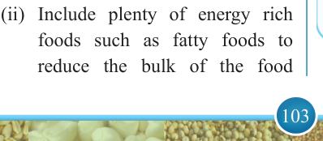
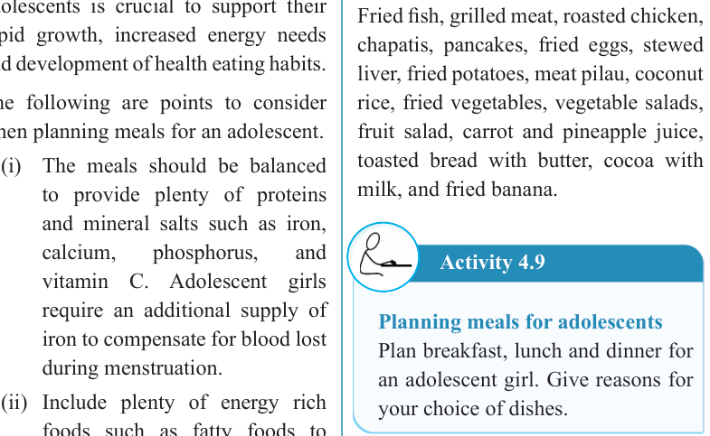
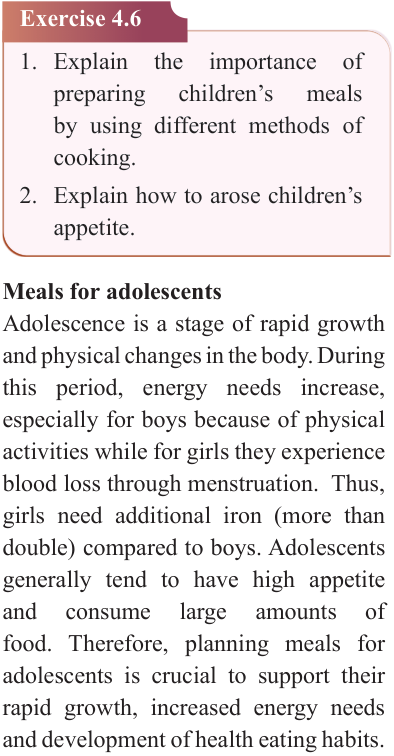

103


Food and Human Nutrition

Form Two


Exercise 4.6
1. Explain
the
importance
of
preparing
children’s
meals
by using different methods of cooking.
2. Explain how to arose children’s appetite.
Meals for adolescents
Adolescence is a stage of rapid growth and physical changes in the body. During this period, energy needs increase, especially for boys because of physical activities while for girls they experience blood loss through menstruation. Thus, girls need additional iron (more than double) compared to boys. Adolescents generally tend to have high appetite and
consume
large
amounts
of
food. Therefore, planning meals for adolescents is crucial to support their rapid growth, increased energy needs and development of health eating habits.
The following are points to consider when planning meals for an adolescent.
(i) The meals should be balanced to provide plenty of proteins
and mineral salts such as iron, calcium,
phosphorus,
and
vitamin C. Adolescent girls require an additional supply of iron to compensate for blood lost during menstruation.
(ii) Include plenty of energy rich foods such as fatty foods to reduce the bulk of the food
consumed, for example, bread with butter.
(iii) An adequate amount of food should be prepared as teenagers have a high appetite.
(iv) The meals should be regularly and
be
served
attractively.
Encourage eating three balanced meals a day with healthy snacks in-between to maintain energy levels and prevent overeating.
(v) Provide
plenty
of
green
vegetables and fresh fruits for roughage.
(vi) Fluids should be considered to compensate for the lost ones during sports or other physical activities.
Suggested suitable dishes for adolescents
Fried fish, grilled meat, roasted chicken, chapatis, pancakes, fried eggs, stewed liver, fried potatoes, meat pilau, coconut
rice, fried vegetables, vegetable salads, fruit salad, carrot and pineapple juice, toasted bread with butter, cocoa with milk, and fried banana.
Activity 4.9
Planning meals for adolescents
Plan breakfast, lunch and dinner for an adolescent girl. Give reasons for your choice of dishes.
17/09/2025 16:30